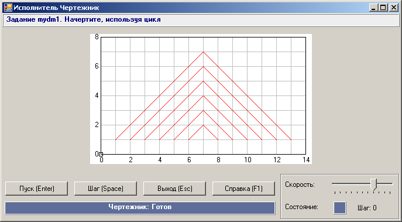
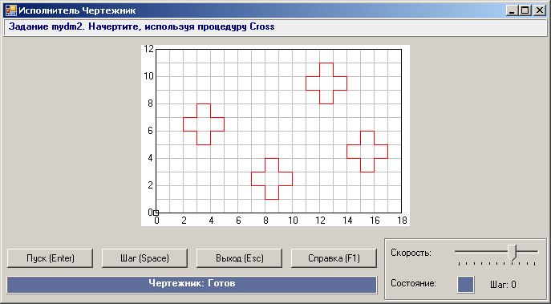
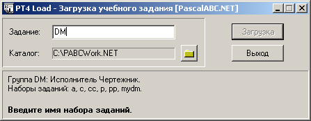
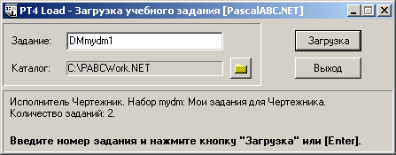

DMTasks созданная нами группа была автоматически зарегистрирована
в мастере по созданию программ-заготовок PT4Load.
Если теперь нажать кнопку DM в поле «Задание», то окно примет следующий вид:
Опишем последовательность создания группы заданий для исполнителя Чертежник. Создадим модуль DMTasks.pas со следующим текстом:
unit DMTasks;
interface
uses DMTaskMaker;
implementation
procedure FirstDM;
var i,a: integer;
begin
TaskText('Задание mydm1. Начертите, используя цикл');
Field(14,8);
DoToPoint(7,7);
a:=6;
for i:=1 to 6 do
begin
DoPenDown;
DoOnVector(a,-a);
DoOnVector(-a,a);
DoOnVector(-a,-a);
DoOnVector(a,a);
Dec(a);
DoPenUp;
DoOnVector(0,-1);
end;
end;
begin
RegisterGroup('mydm','Мои задания для Чертежника','DMTasks',2);
RegisterTask('mydm1',FirstDM);
end.
Наберем и запустим основную программу (сохранять ее в каком-либо файле не требуется):
uses Drawman, DMTasks;
begin
Task('mydm1');
end.
Будет выведено следующее задание для Чертежника:

Добавим задание на разработку процедуры:
procedure DoCross;
begin
DoPenDown;
DoOnVector(1,0); DoOnVector(0,-1);
DoOnVector(1,0); DoOnVector(0,-1);
DoOnVector(-1,0); DoOnVector(0,-1);
DoOnVector(-1,0); DoOnVector(0,1);
DoOnVector(-1,0); DoOnVector(0,1);
DoOnVector(1,0); DoOnVector(0,1);
DoPenUp;
end;
procedure SecondDM;
begin
TaskText('Задание mydm2. Начертите, используя процедуру Cross');
Field(18,12);
DoToPoint(3,8);
DoCross;
DoToPoint(8,4);
DoCross;
DoToPoint(12,11);
DoCross;
DoToPoint(15,6);
DoCross;
end;
Добавим вызов процедуры регистрации для данного задания; в результате секция инициализации примет следующий вид:
begin
RegisterGroup('mydm','Мои задания для Чертежника','DMTasks',2);
RegisterTask('mydm1',FirstDM);
RegisterTask('mydm2',SecondDM);
end.
Изменим основную программу:
uses Drawman, DMTasks;
begin
Task('mydm2');
end.
При запуске этой программы в окне исполнителя Чертежник будет выведено новое задание:

При первом запуске программы с подключенным модулем DMTasks созданная нами группа была автоматически зарегистрирована
в мастере по созданию программ-заготовок PT4Load.
Если теперь нажать кнопку  и в появившемся окне
PT4Load ввести префикс
и в появившемся окне
PT4Load ввести префикс
DM в поле «Задание», то окно примет следующий вид:

Мы видим, что группа заданий mydm появилась в списке доступных групп для исполнителя Чертежник. Наберем имя задания
mydm1:

После нажатия клавиши Enter в рабочем каталоге будет создан новый файл DMmydm1.pas со следующим содержимым:
uses Drawman, DMTasks;
begin
Task('mydm1');
end.
Можно попытаться решить :)